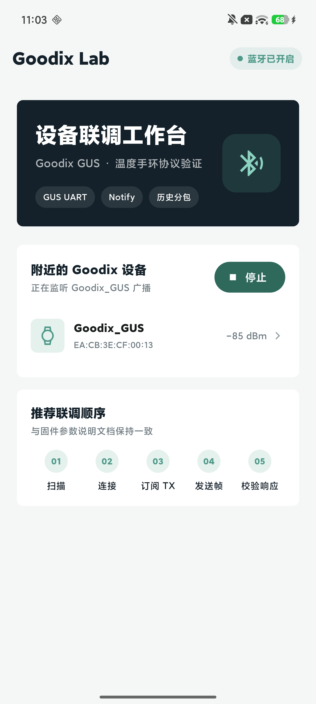
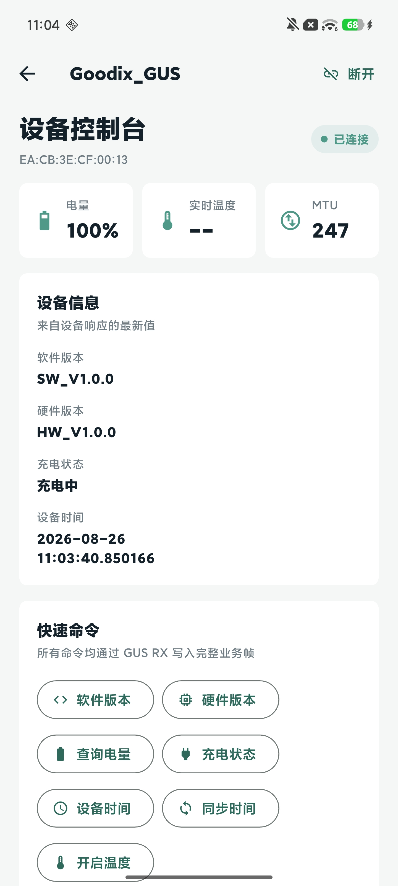

01
扫描并连接
自动识别名称包含 Goodix_GUS 或广播 GUS 服务 UUID 的设备，完成服务发现与 TX 通知订阅。
TRCK 是面向 Goodix GUS 温度手环的移动联调工作台。从设备发现、服务订阅到温度与历史数据，全部流程都在一个界面完成。
为设备联调设计的顺序化体验。连接状态、协议指令和设备返回都保留在工作现场。
自动识别名称包含 Goodix_GUS 或广播 GUS 服务 UUID 的设备，完成服务发现与 TX 通知订阅。
软件版本、硬件版本、电量、充电状态和设备时间，集中在设备控制台中查询与同步。
开启实时温度通知，或读取全部与未上传历史。分包顺序自动校验，记录可导出为 TXT。
沉淀扫描、设备控制和日志信息，让现场联调专注在数据本身。


围绕 Goodix GUS UART 协议构建，内置常用指令的帧构造、解析与状态处理。TX、RX、SYS 三类日志帮助你快速定位每一处交互。